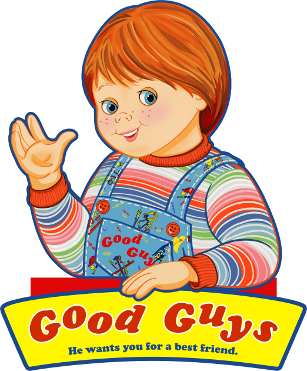

Em Brinquedo Assassino, ou popularmente conhecido como Chucky.
O serial killer Charles Lee Ray é baleado pela polícia e usa um ritual vodu para transferir sua alma para um boneco.
O brinquedo acaba sendo dado de presente ao pequeno Andy, um garotinho de seis anos. Logo, o boneco ganha vida, assume o nome de Chucky e inicia uma onda de assassinatos brutais, enquanto Andy tenta desesperadamente provar aos adultos que seu brinquedo é um assassino
